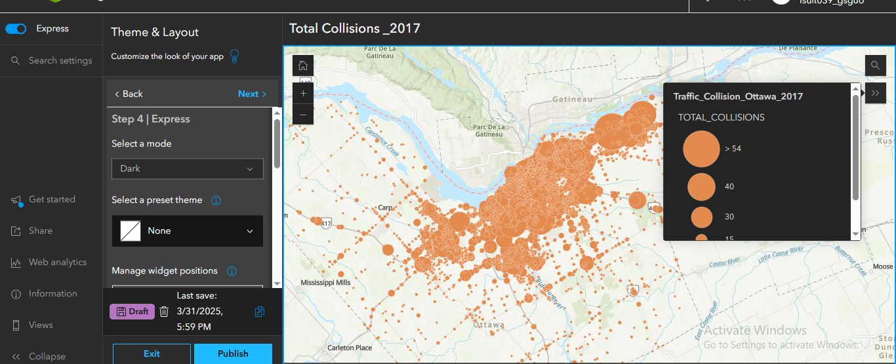

Traffic Incident Analysis and Dashboard Visualization in ArcGIS Online
Overview: This project involved the processing, visualization, and interactive presentation of traffic collision data using the ArcGIS Online ecosystem. The goal was to improve spatial understanding of traffic incidents in the city and to provide decision-makers and the public with accessible visual tools to analyze trends, hotspot locations, and types of collisions. The project culminated in an interactive ArcGIS Dashboard that presents real-time geospatial insights.
Project Objectives
- Map and analyze the spatial distribution of traffic incidents.
- Create an interactive web map and dashboard to visualize accident patterns and critical metrics.
- Enhance data accessibility for informed decision-making by the public and city planners.
Tools and Technologies
- Platform: ArcGIS Online
- Applications: ArcGIS Web Map, Instant Apps, ArcGIS Dashboards
- Data Format: CSV file containing spatial and attribute data for traffic incidents
Workflow & Key Highlights
- Data Preparation: A CSV file containing detailed traffic collision records, including latitude/longitude, date, and parties involved (pedestrians, cyclists, vehicles), was uploaded to ArcGIS Online and converted into a hosted feature layer.
- Web Map Creation: Constructed an interactive Web Map to spatially visualize all reported accident points. The map features symbology based on collision type, enhancing thematic clarity.
- Instant App Development: Leveraged ArcGIS Instant Apps to create a streamlined user interface that allows non-technical users to explore the traffic data interactively through filtering and pop-up information panels. 
- Dashboard Design: Developed a dynamic ArcGIS Dashboard to display real-time statistics, such as the number of cyclist and pedestrian collisions. Integrated interactive selectors (e.g., location filters) and visual widgets (e.g., bar charts, indicators, and pie charts) for enriched user experience and data storytelling.

Key Learning Outcomes
- Developed advanced skills in ArcGIS Online for web mapping, app creation, and dashboard design.
- Learned how to translate raw CSV data into meaningful spatial insights using geovisualization techniques.